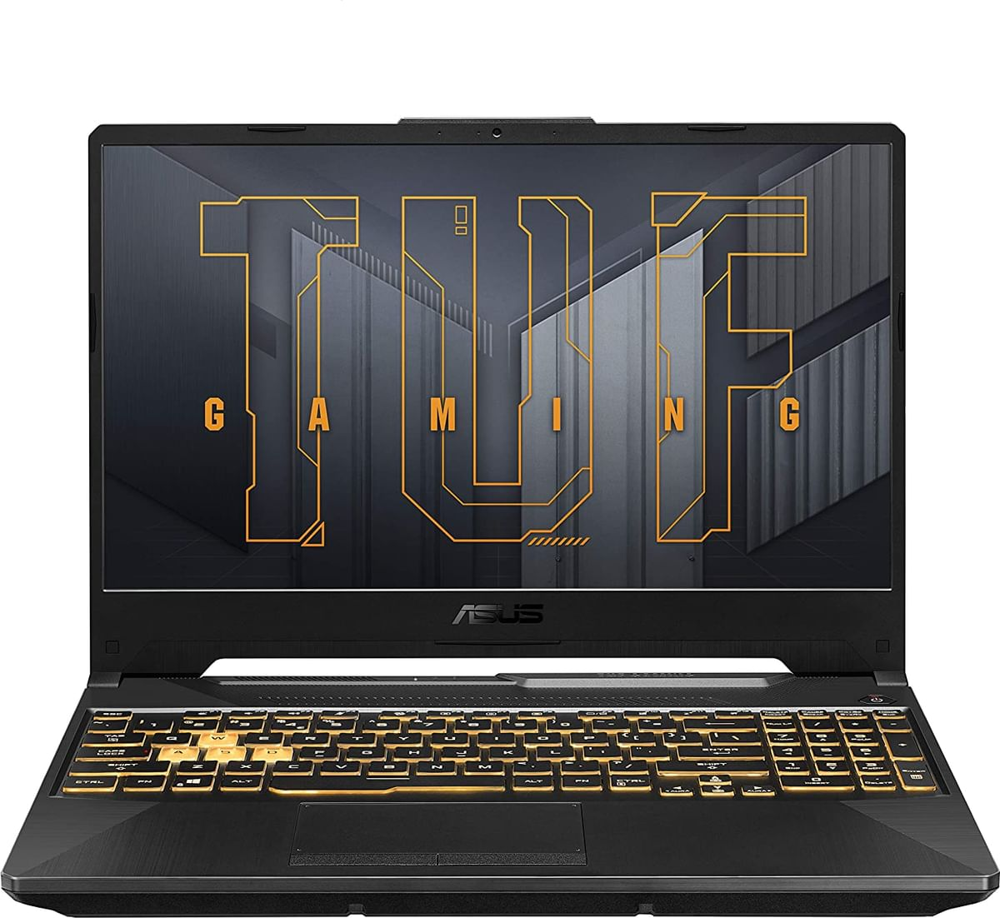

ASUS TUF Gaming F15
Cena: 3399,00 zł

Procesor:
Intel Core i5-11400H (6 rdzeni, 12 wątków, 2.70-4.50 GHz, 12MB cache)
Chipset:
Intel HM570
Pamięć RAM:
16 GB (DDR4, 3200 MHz)
Maksymalna obsługiwana ilość pamięci RAM:
32 GB
Liczba gniazd pamięci (ogółem / wolne):
2/0
Dysk SSD M.2 PCIe:
512 GB
Opcje dołożenia dysków:
Możliwość montażu dysku M.2 PCIe (elementy montażowe w zestawie)
Wbudowany napęd optyczny:
Nie
Dotykowy ekran:
Nie
Typ ekranu:
Matowy, LED, IPS
Przekątna ekranu:
15,6"
Rozdzielczość ekranu:
1920 x 1080 (Full HD)
Częstotliwość odświeżania ekranu:
144 Hz
Jasność matrycy:
250 cd/m²
Karta graficzna:
NVIDIA GeForce RTX 3050
Intel UHD Graphics
Moc karty graficznej (TGP):
60 W
Maks. moc karty graficznej (TGP):
75 W
Pamięć karty graficznej:
4 GB GDDR6
Dźwięk:
Wbudowane głośniki stereo
Wbudowane dwa mikrofony
Kamera internetowa:
1.0 Mpix
Łączność:
LAN 1 Gb/s
Wi-Fi 6
Moduł Bluetooth 5.2
Złącza:
USB 3.2 Gen. 1 - 3 szt.
USB Typu-C (z Thunderbolt™ 4) - 1 szt.
HDMI 2.0b - 1 szt.
RJ-45 (LAN) - 1 szt.
Wyjście słuchawkowe/wejście mikrofonowe - 1 szt.
DC-in (wejście zasilania) - 1 szt.
Typ baterii:
Litowo-jonowa
Pojemność baterii:
3-komorowa, 4240 mAh
Kolor dominujący:
Czarny
Czytnik linii papilarnych:
Nie
Podświetlana klawiatura:
Tak
Kolor podświetlenia klawiatury:
Wielokolorowy
Zabezpieczenia:
Możliwość zabezpieczenia linką (port Kensington Lock)
Szyfrowanie TPM
System operacyjny:
Brak systemu
Zasilacz:
20 V
9 A
180 W
Wtyk: okrągły z pinem - 5,5-3,0 mm
A20-180P1A
Dodatkowe informacje:
Wydzielona klawiatura numeryczna
Wielodotykowy, intuicyjny touchpad
Wysokość:
26,2 mm
Szerokość:
360 mm
Głębokość:
260 mm
Waga:
2,08 kg
Dołączone akcesoria:
Zasilacz
Rodzaj gwarancji:
Standardowa
Gwarancja:
24 miesiące (gwarancja producenta)